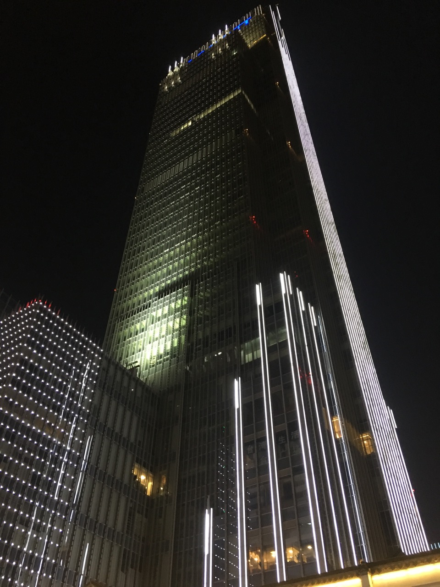

Wuxi
Liang Xi, TaiHu
Wuxi, hereinafter referred to as the "tin", called Liang Xi, golden, known as "the pearl of taihu lake".Wuxi city is located in the Yangtze river delta plain hinterland, south jiangsu, the transportation center of the taihu lake basin, the beijing-hangzhou grand canal runs through.Wuxi lean on the Yangtze river north, south, faces the taihu lake, suzhou in the near east, changzhou in the west, and constitute a suxichang metropolitan area.Wuxi is the hometown of fish and rice since ancient times, known as the cloth dock, wharf, kiln pier, SiDou money, known as the market, is China's national famous historical and cultural city.Wuxi is the cradle of China's national industry and township industry, is the birthplace of southern jiangsu model.Wuxi culture belongs to the wu yue culture, people belong to jiangsu and zhejiang provinces and use wu.Wuxi turtle head isle, lingshan Buddha, media, film and television base (city of three kingdoms, water margin, Tang Cheng), meiyuan, li garden, huishan town, swing mouth town, donglin academy, chung temple, south temple and other scenic spots, is China's excellent tourism city."Best in taihu lake, after all, can the head" poet guo moruo is used to describe the wuxi taihu lake scenery.
无锡，简称“锡”，古称梁溪、金匮，被誉为“太湖明珠”。无锡市位于长江三角洲平原腹地，江苏南部，太湖流域的交通中枢，京杭大运河从中穿过。无锡北倚长江，南濒太湖，东接苏州，西连常州，构成苏锡常都市圈。无锡自古就是鱼米之乡，素有布码头、钱码头、窑码头、丝都、米市之称，是中国国家历史文化名城。无锡是中国民族工业和乡镇工业的摇篮，是苏南模式的发祥地。无锡文化属吴越文化，无锡人属江浙民系使用吴语。 无锡有鼋头渚、灵山大佛、无锡中视影视基地（三国城、水浒城、唐城）、梅园、蠡园、惠山古镇、荡口古镇、东林书院、崇安寺、南禅寺等景点，是中国优秀旅游城市。“太湖佳绝处，毕竟在鼋头”是诗人郭沫若用来形容无锡太湖的风景的。
